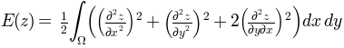

Learn what to expect in the new updates

matplotlib.tri¶Unstructured triangular grid functions.
matplotlib.tri.Triangulation(x, y, triangles=None, mask=None)¶An unstructured triangular grid consisting of npoints points and ntri triangles. The triangles can either be specified by the user or automatically generated using a Delaunay triangulation.
| Parameters: | x, y : array_like of shape (npoints)
triangles : integer array_like of shape (ntri, 3), optional
mask : boolean array_like of shape (ntri), optional
|
|---|
Notes
For a Triangulation to be valid it must not have duplicate points, triangles formed from colinear points, or overlapping triangles.
Attributes
edges |
|
neighbors |
|
| is_delaunay | (bool) Whether the Triangulation is a calculated Delaunay triangulation (where triangles was not specified) or not. |
calculate_plane_coefficients(z)¶Calculate plane equation coefficients for all unmasked triangles from the point (x,y) coordinates and specified z-array of shape (npoints). Returned array has shape (npoints,3) and allows z-value at (x,y) position in triangle tri to be calculated using z = array[tri,0]*x + array[tri,1]*y + array[tri,2].
edges¶Return integer array of shape (nedges,2) containing all edges of non-masked triangles.
Each edge is the start point index and end point index. Each edge (start,end and end,start) appears only once.
get_from_args_and_kwargs(*args, **kwargs)¶Return a Triangulation object from the args and kwargs, and the remaining args and kwargs with the consumed values removed.
There are two alternatives: either the first argument is a Triangulation object, in which case it is returned, or the args and kwargs are sufficient to create a new Triangulation to return. In the latter case, see Triangulation.__init__ for the possible args and kwargs.
get_masked_triangles()¶Return an array of triangles that are not masked.
get_trifinder()¶Return the default matplotlib.tri.TriFinder of this
triangulation, creating it if necessary. This allows the same
TriFinder object to be easily shared.
neighbors¶Return integer array of shape (ntri,3) containing neighbor triangles.
For each triangle, the indices of the three triangles that share the same edges, or -1 if there is no such neighboring triangle. neighbors[i,j] is the triangle that is the neighbor to the edge from point index triangles[i,j] to point index triangles[i,(j+1)%3].
set_mask(mask)¶Set or clear the mask array. This is either None, or a boolean array of shape (ntri).
matplotlib.tri.TriFinder(triangulation)¶Abstract base class for classes used to find the triangles of a Triangulation in which (x,y) points lie.
Rather than instantiate an object of a class derived from TriFinder, it is
usually better to use the function
matplotlib.tri.Triangulation.get_trifinder().
Derived classes implement __call__(x,y) where x,y are array_like point coordinates of the same shape.
matplotlib.tri.TrapezoidMapTriFinder(triangulation)¶Bases: matplotlib.tri.trifinder.TriFinder
TriFinder class implemented using the trapezoid
map algorithm from the book “Computational Geometry, Algorithms and
Applications”, second edition, by M. de Berg, M. van Kreveld, M. Overmars
and O. Schwarzkopf.
The triangulation must be valid, i.e. it must not have duplicate points, triangles formed from colinear points, or overlapping triangles. The algorithm has some tolerance to triangles formed from colinear points, but this should not be relied upon.
__call__(x, y)¶Return an array containing the indices of the triangles in which the specified x,y points lie, or -1 for points that do not lie within a triangle.
x, y are array_like x and y coordinates of the same shape and any number of dimensions.
Returns integer array with the same shape and x and y.
matplotlib.tri.TriInterpolator(triangulation, z, trifinder=None)¶Abstract base class for classes used to perform interpolation on triangular grids.
Derived classes implement the following methods:
__call__(x, y), where x, y are array_like point coordinates of the same shape, and that returns a masked array of the same shape containing the interpolated z-values.gradient(x, y), where x, y are array_like point coordinates of the same shape, and that returns a list of 2 masked arrays of the same shape containing the 2 derivatives of the interpolator (derivatives of interpolated z values with respect to x and y).
matplotlib.tri.LinearTriInterpolator(triangulation, z, trifinder=None)¶Bases: matplotlib.tri.triinterpolate.TriInterpolator
A LinearTriInterpolator performs linear interpolation on a triangular grid.
Each triangle is represented by a plane so that an interpolated value at point (x,y) lies on the plane of the triangle containing (x,y). Interpolated values are therefore continuous across the triangulation, but their first derivatives are discontinuous at edges between triangles.
| Parameters: | triangulation :
z : array_like of shape (npoints,)
trifinder :
|
|---|
Methods
__call__ (x, y) |
( Returns interpolated values at x,y points) |
gradient (x, y) |
(Returns interpolated derivatives at x,y points) |
__call__(x, y)¶Returns a masked array containing interpolated values at the specified x,y points.
| Parameters: | x, y : array-like
|
|---|---|
| Returns: | z : np.ma.array
|
gradient(x, y)¶Returns a list of 2 masked arrays containing interpolated derivatives at the specified x,y points.
| Parameters: | x, y : array-like
|
|---|---|
| Returns: | dzdx, dzdy : np.ma.array
|
matplotlib.tri.CubicTriInterpolator(triangulation, z, kind='min_E', trifinder=None, dz=None)¶Bases: matplotlib.tri.triinterpolate.TriInterpolator
A CubicTriInterpolator performs cubic interpolation on triangular grids.
In one-dimension - on a segment - a cubic interpolating function is defined by the values of the function and its derivative at both ends. This is almost the same in 2-d inside a triangle, except that the values of the function and its 2 derivatives have to be defined at each triangle node.
The CubicTriInterpolator takes the value of the function at each node - provided by the user - and internally computes the value of the derivatives, resulting in a smooth interpolation. (As a special feature, the user can also impose the value of the derivatives at each node, but this is not supposed to be the common usage.)
| Parameters: | triangulation :
z : array_like of shape (npoints,)
kind : {‘min_E’, ‘geom’, ‘user’}, optional
trifinder :
dz : tuple of array_likes (dzdx, dzdy), optional
|
|---|
Notes
This note is a bit technical and details the way a
CubicTriInterpolator computes a cubic
interpolation.
The interpolation is based on a Clough-Tocher subdivision scheme of the triangulation mesh (to make it clearer, each triangle of the grid will be divided in 3 child-triangles, and on each child triangle the interpolated function is a cubic polynomial of the 2 coordinates). This technique originates from FEM (Finite Element Method) analysis; the element used is a reduced Hsieh-Clough-Tocher (HCT) element. Its shape functions are described in [R1]. The assembled function is guaranteed to be C1-smooth, i.e. it is continuous and its first derivatives are also continuous (this is easy to show inside the triangles but is also true when crossing the edges).
In the default case (kind =’min_E’), the interpolant minimizes a curvature energy on the functional space generated by the HCT element shape functions - with imposed values but arbitrary derivatives at each node. The minimized functional is the integral of the so-called total curvature (implementation based on an algorithm from [R2] - PCG sparse solver):

If the case kind =’geom’ is chosen by the user, a simple geometric approximation is used (weighted average of the triangle normal vectors), which could improve speed on very large grids.
References
| [R1] | (1, 2) Michel Bernadou, Kamal Hassan, “Basis functions for general Hsieh-Clough-Tocher triangles, complete or reduced.”, International Journal for Numerical Methods in Engineering, 17(5):784 - 789. 2.01. |
| [R2] | (1, 2) C.T. Kelley, “Iterative Methods for Optimization”. |
Methods
__call__ (x, y) |
( Returns interpolated values at x,y points) |
gradient (x, y) |
(Returns interpolated derivatives at x,y points) |
__call__(x, y)¶Returns a masked array containing interpolated values at the specified x,y points.
| Parameters: | x, y : array-like
|
|---|---|
| Returns: | z : np.ma.array
|
gradient(x, y)¶Returns a list of 2 masked arrays containing interpolated derivatives at the specified x,y points.
| Parameters: | x, y : array-like
|
|---|---|
| Returns: | dzdx, dzdy : np.ma.array
|
Examples
An example of effective application is shown below (plot of the direction of the vector field derivated from a known potential field):
(Source code, png, hires.png, pdf)

matplotlib.tri.TriRefiner(triangulation)¶Abstract base class for classes implementing mesh refinement.
A TriRefiner encapsulates a Triangulation object and provides tools for mesh refinement and interpolation.
Derived classes must implements:
refine_triangulation(return_tri_index=False, **kwargs), where the optional keyword arguments kwargs are defined in each TriRefiner concrete implementation, and which returns :
- a refined triangulation
- optionally (depending on return_tri_index), for each point of the refined triangulation: the index of the initial triangulation triangle to which it belongs.
refine_field(z, triinterpolator=None, **kwargs), where:
- z array of field values (to refine) defined at the base triangulation nodes
- triinterpolator is a
TriInterpolator(optional)- the other optional keyword arguments kwargs are defined in each TriRefiner concrete implementation
and which returns (as a tuple) a refined triangular mesh and the interpolated values of the field at the refined triangulation nodes.
matplotlib.tri.UniformTriRefiner(triangulation)¶Bases: matplotlib.tri.trirefine.TriRefiner
Uniform mesh refinement by recursive subdivisions.
| Parameters: | triangulation :
|
|---|
refine_field(z, triinterpolator=None, subdiv=3)¶Refines a field defined on the encapsulated triangulation.
Returns refi_tri (refined triangulation), refi_z (interpolated values of the field at the node of the refined triangulation).
| Parameters: | z : 1d-array-like of length
triinterpolator :
subdiv : integer, optional
|
|---|---|
| Returns: | refi_tri :
refi_z : 1d array of length: refi_tri node count.
|
Examples
The main application of this method is to plot high-quality iso-contours on a coarse triangular grid (e.g., triangulation built from relatively sparse test data):
(Source code, png, hires.png, pdf)

refine_triangulation(return_tri_index=False, subdiv=3)¶Computes an uniformly refined triangulation refi_triangulation of
the encapsulated triangulation.
This function refines the encapsulated triangulation by splitting each
father triangle into 4 child sub-triangles built on the edges midside
nodes, recursively (level of recursion subdiv).
In the end, each triangle is hence divided into 4**subdiv
child triangles.
The default value for subdiv is 3 resulting in 64 refined
subtriangles for each triangle of the initial triangulation.
| Parameters: | return_tri_index : boolean, optional
subdiv : integer, optional
|
|---|---|
| Returns: | refi_triangulation :
found_index : array-like of integers
|
matplotlib.tri.TriAnalyzer(triangulation)¶Define basic tools for triangular mesh analysis and improvement.
A TriAnalizer encapsulates a Triangulation
object and provides basic tools for mesh analysis and mesh improvement.
| Parameters: | triangulation :
|
|---|
Attributes
scale_factors |
circle_ratios(rescale=True)¶Returns a measure of the triangulation triangles flatness.
The ratio of the incircle radius over the circumcircle radius is a
widely used indicator of a triangle flatness.
It is always <= 0.5 and == 0.5 only for equilateral
triangles. Circle ratios below 0.01 denote very flat triangles.
To avoid unduly low values due to a difference of scale between the 2
axis, the triangular mesh can first be rescaled to fit inside a unit
square with scale_factors (Only if rescale is True, which is
its default value).
| Parameters: | rescale : boolean, optional
|
|---|---|
| Returns: | circle_ratios : masked array
|
get_flat_tri_mask(min_circle_ratio=0.01, rescale=True)¶Eliminates excessively flat border triangles from the triangulation.
Returns a mask new_mask which allows to clean the encapsulated
triangulation from its border-located flat triangles
(according to their circle_ratios()).
This mask is meant to be subsequently applied to the triangulation
using matplotlib.tri.Triangulation.set_mask() .
new_mask is an extension of the initial triangulation mask
in the sense that an initially masked triangle will remain masked.
The new_mask array is computed recursively ; at each step flat triangles are removed only if they share a side with the current mesh border. Thus no new holes in the triangulated domain will be created.
| Parameters: | min_circle_ratio : float, optional
rescale : boolean, optional
|
|---|---|
| Returns: | new_mask : array-like of booleans
|
Notes
The rationale behind this function is that a Delaunay triangulation - of an unstructured set of points - sometimes contains almost flat triangles at its border, leading to artifacts in plots (especially for high-resolution contouring). Masked with computed new_mask, the encapsulated triangulation would contain no more unmasked border triangles with a circle ratio below min_circle_ratio, thus improving the mesh quality for subsequent plots or interpolation.
Examples
Please refer to the following illustrating example:
(Source code, png, hires.png, pdf)

scale_factors¶Factors to rescale the triangulation into a unit square.
Returns k, tuple of 2 scale factors.
| Returns: | k : tuple of 2 floats (kx, ky)
|
|---|
{kind=link}
{kind=link}
{kind=link}
{kind=link}
{kind=link}
{kind=link}